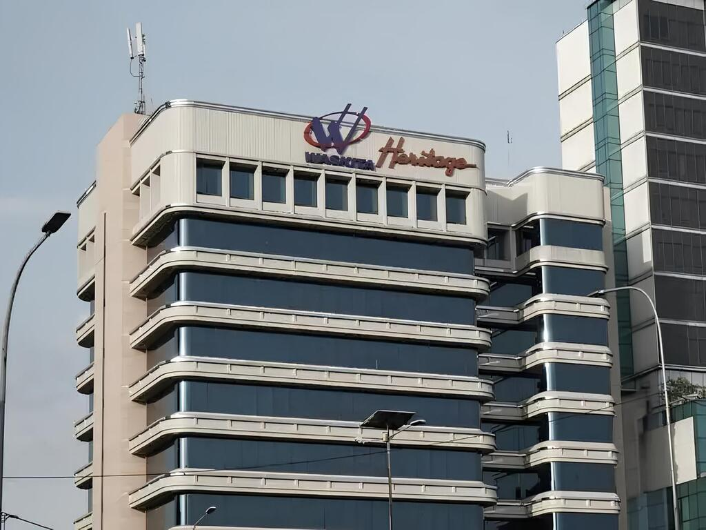

SISTEM INFORMASI GEOSPASIAL
Sistem Informasi Pembebasan Lahan
Trase Jalan Tol Krian - Candi, Jawa Timur Bebasis WebGIS
Website ini menyajikan hasil Kerja Praktik UGM Tahun 2026 mengenai identifikasi area terdampak pembangunan jalan tol Krian - Candi. Analisis dilakukan menggunakan data foto udaras dan Sistem Informasi Geografis (SIG) untuk memetakan pemukiman serta lahan sawah yang terkena dampak pembangunan.
18.55 KM+
Panjang Trase Tol
20
Desa Terdampak
10+
Spatial Analysis
Dashboard
Interactive Map

65
Years of
Excellence
Excellence
Profil Perusahaan
PT Waskita Karya (Persero) Tbk
PT Waskita Karya (Persero) Tbk merupakan Badan Usaha Milik Negara (BUMN) yang bergerak di bidang konstruksi dan infrastruktur di Indonesia. Perusahaan berperan penting dalam pembangunan jalan tol, jembatan, bendungan, dan berbagai proyek strategis nasional.
Dalam proyek pembangunan Jalan Tol Krian – Candi Jawa Timur, Waskita Karya berperan sebagai pelaksana konstruksi. Proyek ini bertujuan meningkatkan konektivitas wilayah serta mendukung pertumbuhan ekonomi kawasan. Website ini dibuat sebagai bagian dari kegiatan Kerja Praktik UGM Tahun 2026 untuk menganalisis dampak pembangunan terhadap pemukiman dan lahan sawah menggunakan Sistem Informasi Geografis (SIG).
Analisis Spasial Efisien
Data Terverifikasi
Pendekatan Akademik SIG
Akses WebGIS Interaktif
Methodology
Analisis menggunakan pendekatan spasial berbasis foto udara resolusi tinggi dan SIG untuk mengidentifikasi serta menghitung luas area terdampak secara akurat
Top Rated
Buffer Analysis
Buffer 30 m ke kanan dan 30 m ke kiri dari centerline tol dibuat menggunakan analisis SIG untuk membentuk koridor ROW selebar maksimal 60 meter. Zona ini digunakan sebagai batas identifikasi dan perhitungan luas permukiman serta sawah yang terdampak pembangunan.
Overlay Analysis
Overlay (Intersect/Clip) digunakan untuk menentukan area terdampak dengan menumpangtindihkan layer permukiman dan sawah terhadap trase tol atau Buffer ROW. Fungsi Intersect menghasilkan bagian yang benar-benar masuk koridor pembangunan, sedangkan Clip memotong objek sesuai batas proyek.
Research Methodology
1
Studi Literatur
Kajian teori perubahan tutupan lahan, dampak pembangunan infrastruktur, dan metode analisis spasial.
2
Pengumpulan Data
Ortofoto resolusi tinggi, data trase jalan tol, dan batas administrasi terproyeksi.
3
Digitasi Tutupan Lahan
Interpretasi visual dan digitasi permukiman serta sawah berbasis ortofoto.
4
Analisis Overlay Spasial
Buffering trase jalan tol dan overlay untuk mengidentifikasi area terdampak.
5
Perhitungan Luas Area Terdampak
Perhitungan luas poligon hasil overlay untuk memperoleh total luas permukiman dan sawah terdampak serta distribusi spasialnya.
6
Konversi Ortofoto (GDAL2Tiles)
Konversi ortofoto menjadi format XYZ tiles agar kompatibel dan optimal ditampilkan pada Leaflet.
7
Publikasi Layer (QGIS2Web)
Ekspor layer digitasi dan hasil analisis menjadi webGIS interaktif berbasis Leaflet.
8
Kustomisasi Website
Penyesuaian tampilan, layout, legenda, popup atribut, serta optimasi antarmuka pengguna.
9
Deployment & Hosting
Upload repository ke GitHub dan deployment menggunakan Vercel untuk memperoleh URL publik WebGIS.
What We Bring to the Pages
Geometri Presisi
Menghitung luas setiap poligon terdampak dengan perhitungan geometri SIG.
Visualisasi Transparan
Hasil disajikan melalui peta interaktif dengan informasi atribut lengkap.
Distribusi Spasial
Menyediakan data distribusi dampak di sepanjang trase tol secara mendetail.
Peta Pembebasan Lahan Trase Jalan Tol Krian - Candi
Visualisasi ini merepresentasikan distribusi spasial wilayah terdampak pembangunan Jalan Tol Krian–Candi berdasarkan analisis geospasial terhadap batas administrasi, koridor trase, serta penggunaan lahan eksisting guna mendukung evaluasi kebutuhan pembebasan lahan secara terukur dan sistematis.
Analysis Result
Visualisasi Analysis Result menunjukkan dampak pembangunan jalan tol terhadap bangunan dan lahan sawah pada wilayah studi.
Jumlah Bangunan Terdampak
Luas Lahan Pertanian Terdampak
Bangunan Terdampak
Berdasarkan hasil analisis spasial, tercatat 657 bangunan terdampak oleh pembangunan Jalan Tol Krian–Candi. Distribusi bangunan terdampak menunjukkan variasi antar desa, dengan dampak terbesar berada di Tulangan (251 bangunan) dan Wonokayu (227 bangunan). Desa Balongbendo juga mengalami dampak yang cukup signifikan dengan 173 bangunan, sementara Prambon memiliki jumlah bangunan terdampak paling kecil yaitu 6 bangunan. Pola ini mengindikasikan bahwa trase jalan tol lebih banyak melintasi kawasan permukiman padat, sehingga berpotensi menimbulkan kebutuhan pembebasan lahan dan relokasi hunian.
Lahan Pertanian Terdampak
Selain kawasan permukiman, pembangunan jalan tol juga berdampak terhadap lahan pertanian, khususnya persawahan. Total luas sawah terdampak mencapai 170,294 hektar. Dampak terbesar terjadi di Tulangan, dengan luas sekitar 100,69 ha, yang menunjukkan dominasi lintasan tol pada lahan pertanian produktif. Desa lain seperti Wonokayu (20,679 ha), Prambon (18,218 ha), Balongbendo (17,022 ha), dan Candi (14,684 ha) mengalami dampak yang relatif lebih kecil namun tetap perlu diperhatikan karena berpotensi memengaruhi aktivitas pertanian dan sistem irigasi.
Interpretasi Umum
Secara keseluruhan, hasil analisis menunjukkan bahwa dampak pembangunan Jalan Tol Krian–Candi bersifat tidak merata secara spasial, dengan konsentrasi dampak terbesar berada di Desa Tulangan baik dari sisi bangunan maupun lahan sawah. Temuan ini dapat digunakan sebagai dasar dalam perencanaan pembebasan lahan, penentuan prioritas kompensasi, serta evaluasi dampak sosial dan pertanian untuk mendukung pembangunan infrastruktur yang berkelanjutan.
Team
Tim Kerja Praktik Program Studi S1 Teknik Geodesi UGM Tahun 2026
Mahasisiwa S1 Teknik Geodesi
Nabila Ari Nur Hasanah
NIM. 22/493187/TK/54013
Mahasisiwa S1 Teknik Geodesi
Anggi Larassati
NIM. 22/493643/TK/54089
2 Months
Internship at PT Waskita Karya (Persero) Tbk.
2022
Geodetic Engineering
8
Semester Studi
Contact
Hubungi kami untuk informasi proyek dan kerja sama
Get In Touch
Let’s Build the Future Together
Kami menghadirkan solusi infrastruktur yang inovatif, profesional, dan berkelanjutan untuk mendukung keberhasilan setiap proyek Anda.
Email Us
waskita@waskita.co.id
Visit Us
Gedung Waskita Heritage Jl. MT Haryono Kav. No 10, Cawang - Jakarta 13340
Kantor Pusat
PT Waskita Karya (Persero) Tbk.